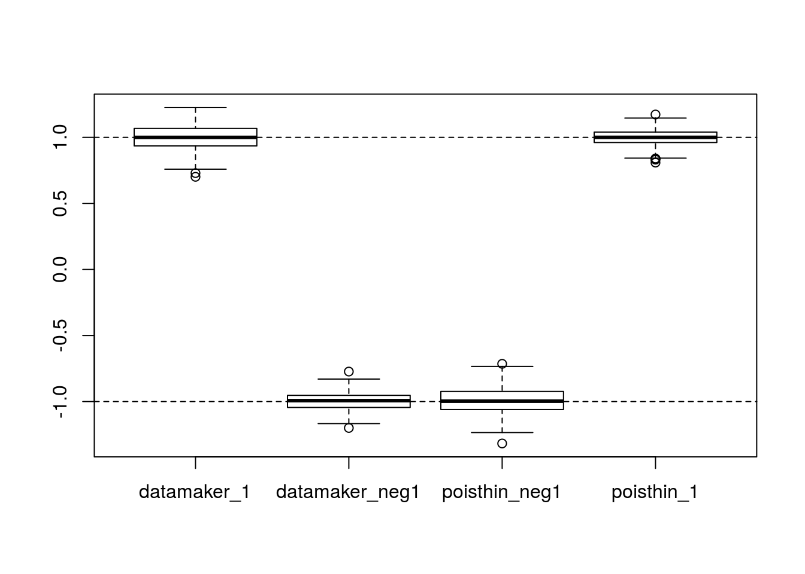

Here, I provide some comparisons between seqgendiff and the code from data_generators.R. I hope to show that they provide comparable comparisons.
I first take a look at only two_genes. Briefly, I added signal using the two different codes to the two most expressed genes (in terms of mean expression). I used an effect size of 1 for one gene and -1 for another gene. I then ran limma on the result and saved the estimated effect size. I did this 500 times and the boxplots are the estimated coefficients.
## subset data -----------------------------------------------------------
## forces datamaker_counts and poisthin to have same effect sizes
set.seed(13)
constant_function <- function(n) { c(1, -1) }
library(seqgendiff)
mat <- read.csv("../output/gtex_tissue_gene_reads_v6p/muscle.csv")
max_row <- order(rowMeans(mat[, -(1:2)]), decreasing = TRUE)[1:2]
gmat <- mat[max_row, , drop = FALSE]
write.csv(gmat, "../output/small/muscle.csv", row.names = FALSE)
smalldat <- as.matrix(t(gmat[, -(1:2)]))
## settings for datamaker
source("../code/data_generators.R")
args <- list()
args$nullpi <- 0
args$Nsamp <- nrow(smalldat) / 2
args$Ngene <- ncol(smalldat)
args$log2foldsd <- 1
args$poisthin <- TRUE
args$tissue <- "muscle"
args$path <- "../output/small/"
args$alt_type <- "constant" ## forces to have same effect size as poisthin
itermax <- 500
simmat <- matrix(NA, nrow = itermax, ncol = 4)
colnames(simmat) <- c("datamaker_1", "datamaker_neg1", "poisthin_neg1", "poisthin_1")
for (index in 1:itermax) {
pout <- poisthin(mat = smalldat, nsamp = nrow(smalldat),
ngene = 2, gselect = "custom", gvec = c(TRUE, TRUE),
signal_fun = constant_function, signal_params = list(),
prop_null = 0)
dout <- datamaker_counts_only(args)
Yd <- log2(dout$input$counts + 1)
Xd <- stats::model.matrix(~dout$input$condition)
betad <- dout$meta$true_log2foldchange
Yp <- log2(pout$Y + 1)
Xp <- pout$X
betap <- pout$beta
lmd <- limma::lmFit(object = Yd, design = Xd)
lmp <- limma::lmFit(object = t(Yp), design = Xp)
simmat[index, 1:2] <- lmd$coefficients[, 2]
simmat[index, 3:4] <- lmp$coefficients[, 2]
}Notice that the boxplots should be centered about 1 and -1.
boxplot(simmat)
abline(h = 1, lty = 2)
abline(h = -1, lty = 2)
sessionInfo()## R version 3.3.2 (2016-10-31)
## Platform: x86_64-pc-linux-gnu (64-bit)
## Running under: Ubuntu 16.04.2 LTS
##
## locale:
## [1] LC_CTYPE=en_US.UTF-8 LC_NUMERIC=C
## [3] LC_TIME=en_US.UTF-8 LC_COLLATE=en_US.UTF-8
## [5] LC_MONETARY=en_US.UTF-8 LC_MESSAGES=en_US.UTF-8
## [7] LC_PAPER=en_US.UTF-8 LC_NAME=C
## [9] LC_ADDRESS=C LC_TELEPHONE=C
## [11] LC_MEASUREMENT=en_US.UTF-8 LC_IDENTIFICATION=C
##
## attached base packages:
## [1] stats graphics grDevices utils datasets methods base
##
## other attached packages:
## [1] seqgendiff_0.1.0
##
## loaded via a namespace (and not attached):
## [1] backports_1.0.5 assertthat_0.1 magrittr_1.5 limma_3.26.9
## [5] rprojroot_1.2 tools_3.3.2 htmltools_0.3.5 yaml_2.1.14
## [9] Rcpp_0.12.9 stringi_1.1.2 rmarkdown_1.3 knitr_1.15.1
## [13] stringr_1.1.0 digest_0.6.11 evaluate_0.10This site was created with R Markdown